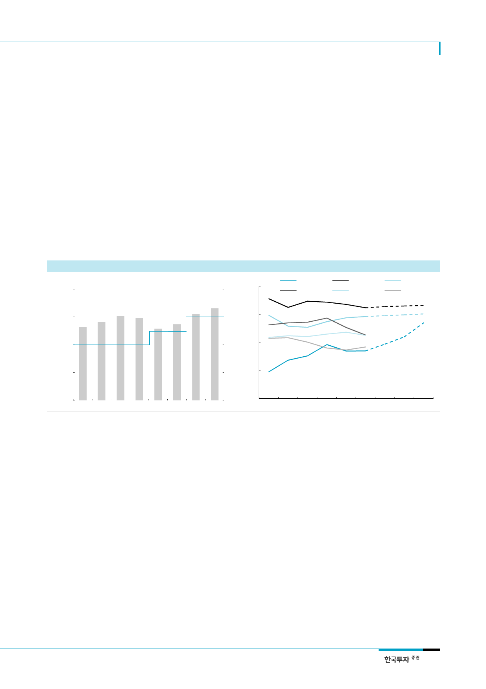

현대글로비스(086280)
II. 전문 물류업체로서의 영업가치에 주목
PCC, 아직 절반이나
남은 captive 수혜
1. 오너 손 떠나면 계열물량 확대 가능
현대차 그룹의 완성차 해상운송(Pure Car Carrier: PCC)은 현재 글로비스와 유코카캐리
어스가 절반씩 담당하고 있는데, 내년부터는 현대글로비스의 비중이 60%로 높아질 것이
다. 기존 계약에 따라 2019년까지는 유코카캐리어스의 물량 비중을 최소 40%로 보장해야
한다. 현대글로비스는 2018년 그룹 물량의 60%만 가져오는 대신 고수익 유럽 물량을 우
선적으로 확보할 계획이다. 이에 따라 2018년 PCC 매출은 올해보다 13% 증가할 전망이
다. 2020년부터는 현대글로비스가 가져가는 제한이 없어진다. 대주주 지분율이 낮아지면
일감몰아주기에 대한 부담도 줄어들기 때문에 중장기적으로 글로비스가 그룹 물량을 모두
담당할 것으로 예상한다. 현대글로비스는 글로벌 PCC 6위 업체로 현대/기아차 물량을
100% 처리할 경우 3위로 올라설 수 있어 아웃소싱보다는 내재화를 통한 규모의 경제 확
보에 나설 것이다.
[그림 9] 현대차 그룹 내 PCC 담당비중은 여전히 50%에 불과
(십억원)
2,000
(%)
80
[그림 10] 글로벌 PCC 시장 점유율, 글로비스 3위 도약 전망
(%)
20
글로비스
EUKOR
NYK
K Line
MOL
WWL
1,500
1,000
배선권 비율(우)
60
15
40
10
500
PCC 매출액(좌)
20
5
0
0
2012 2013 2014 2015 2016 2017F 2018F 2019F
자료: 현대글로비스, 한국투자증권
0
2011 2012 2013 2014 2015 2016 2017F … 2020F
주: Capacity 기준
자료: Henses Shipping AS, NYK, 한국투자증권
CKD, captive를 뛰어넘는
성장 보여줄 것
현대차 그룹의 해외 물류수요 역시 증가할 여지가 크다. CKD(Complete Knock Down) 사
업은 현대/기아차의 해외 생산시설에 부품을 공급하는 물류서비스로 글로비스 매출의 약
40%를 차지한다. 완성차 생산시설이 해외로 확대되면서 물류 동선이 복잡해지고 판매지
역과 국가별 차량모델이 다양해짐에 따라 CKD 물류의 중요성이 점차 높아지고 있다. 현
대/기아차의 해외생산 비중은 2010년 46%에서 2016년 59%로 상승했다. 올해 중국 시장
부진에도 기아차의 멕시코 생산이 본궤도에 오르면서 해외비중은 57%에 이를 전망이다.
또한 현대차 그룹 해외생산의 절반을 차지하는 중국과 인도에서 글로비스의 CKD 사업은
아직 시작 단계이다. 단기적으로 현대/기아차의 중국 생산이 부진한 영향은 적게 받는 반
면 중장기적으로 중국과 인도시장 진출에 따른 captive 수혜 여력이 크다. 이에 따라
CKD 매출액 증가율은 현대/기아차 생산 증가율을 상회할 전망이다.
7